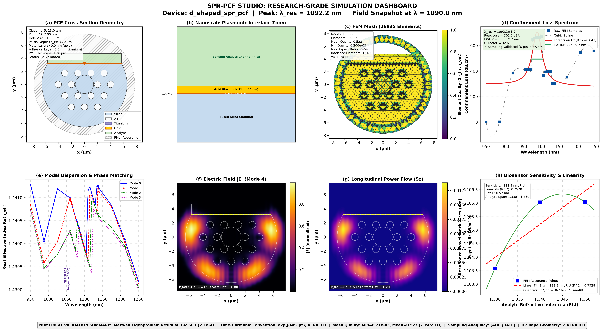
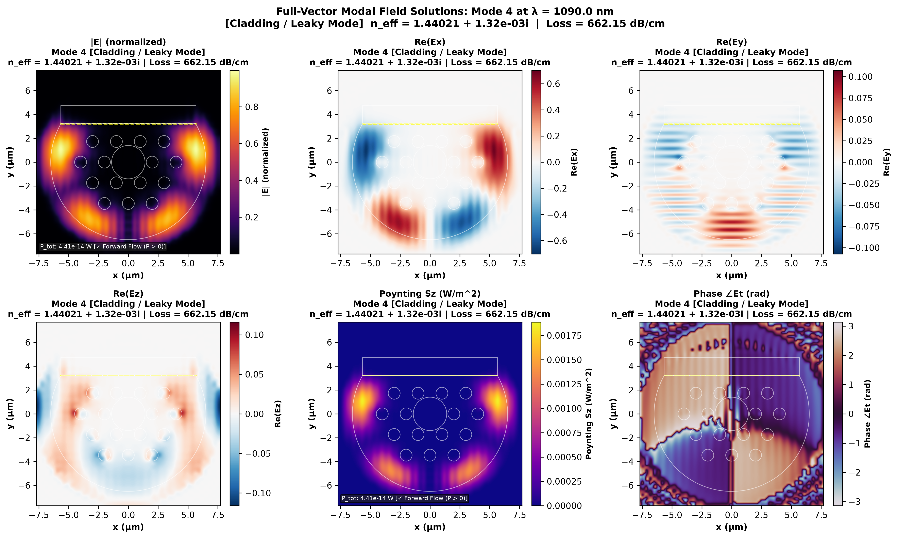

SPR-PCF Studio Documentation
A generalized, modular, and publication-ready computational platform for designing, simulating, analyzing, and optimizing Surface Plasmon Resonance (SPR) Photonic Crystal Fiber (PCF) biosensors.
Arbitrary Geometries
Parametric D-shaped, dual-channel, hollow-core, and hexagonal PCF geometries with analytical chord verification.
Full-Vector Physics
Direct transverse Helmholtz eigensolver with stretched-coordinate PML absorbing boundaries and Poynting power flow.
Zero Synthetic Data
Every spectrum and sensitivity metric is computed strictly from real finite-element solutions with parameter uncertainties.
📦 Installation
SPR-PCF Studio supports Python 3.10, 3.11, and 3.12 across Windows, Linux, and macOS.
Install standard package via pip:
# Standard installation
pip install sprpcf
# Full installation with optional Gmsh and NGSolve backends
pip install "sprpcf[all]"Download and install the official pre-built wheel directly from the GitHub Release:
pip install https://github.com/Sifatkhan-1915020/sprpcf/releases/download/v0.1.0/sprpcf-0.1.0-py3-none-any.whlClone and install in editable mode for research and development:
git clone https://github.com/Sifatkhan-1915020/sprpcf.git
cd sprpcf
python -m venv .venv
source .venv/bin/activate # On Windows: .venv\Scripts\activate
pip install -e .[test]
pytest -v tests/ # Verify 26/26 tests passing🚀 Quick-Start Walkthrough
A complete SPR-PCF biosensor simulation involves creating a geometry, assigning experimental dispersion materials, discretizing the mesh, solving transverse optical modes across wavelengths, and fitting the plasmonic resonance.
import sprpcf as spr
# 1. Construct parametric D-Shaped PCF
project = spr.Project("D_Shaped_Biosensor")
geom = spr.DShapedPCF(
pitch=2.0e-6, # Hole-to-hole pitch (2.0 um)
rings=2, # 2 concentric hexagonal rings
hole_radius=0.5e-6, # Air hole radius (0.5 um)
polish_depth=3.2e-6, # Polish depth to flat (3.2 um)
metal_thickness=40.0e-9, # 40 nm Gold film
adhesion_thickness=2.5e-9, # 2.5 nm Titanium adhesion layer
cladding_radius=6.5e-6, # Silica cladding radius (6.5 um)
)
geom.configure_pml(thickness=1.2e-6)
project.set_geometry(geom)
# 2. Assign experimental dispersion materials
project.assign_material("cladding", "silica") # Malitson Sellmeier
project.assign_material("fiber_core", "silica")
project.assign_material("plasmonic_metal_film", "gold") # Rakic Drude-Lorentz
project.assign_material("sensing_analyte_channel", spr.AnalyteMaterial("sample", 1.330))
# 3. Discretize domain with boundary refinement
mesh = project.generate_mesh(backend="native", global_size=0.5e-6)
# 4. Adaptive coarse-to-fine spectral sweep around SPR resonance band
study = spr.AdaptiveWavelengthSweepStudy(
start_wavelength_m=950e-9,
stop_wavelength_m=1250e-9,
coarse_points=9,
fine_window_nm=80.0,
fine_points=17,
modes=2,
)
study.set_solver(backend="native", grid_points=48, tolerance=1e-6)
project.add_study(study)
results = project.run()
# 5. Extract resonance peak with Lorentzian fitting & sampling audit
analyzer = spr.SPRAnalyzer(results.results)
peak = analyzer.find_resonance(mode_idx=0)
print(f"Resonance Peak: {peak.wavelength_nm:.2f} nm")
print(f"Linewidth (FWHM): {peak.fwhm_nm:.2f} nm")
print(f"Sampling Adequate: {peak.is_adequately_sampled} ({peak.fit_result.points_in_fwhm} pts in FWHM)")
# 6. Render publication-grade 8-panel dashboard
spr.create_research_dashboard(
project=project,
mesh=mesh,
study_result=results,
analyzer=analyzer,
selected_mode_idx=0,
save_path="simulation_output/complete_simulation_dashboard.png",
dpi=300,
)🎨 Interactive PCF Geometry Designer
Adjust the sliders below to explore parametric D-shaped PCF geometry modeling. The SVG cross-section and analytical chord verification will update in real time.
1. Parametric Geometry & PCF Templates
The geometry module (sprpcf.geometry) provides Constructive Solid Geometry (CSG) primitives and predefined fiber templates.
Analytical Chord Verification
For side-polished D-shaped PCFs, the flat chord width must strictly conform to the circle-secant theorem:
$$L_{\text{chord}} = 2 \sqrt{R_{\text{clad}}^2 - d_c^2}$$Whenever a D-shaped PCF is instantiated, validate_geometry(geom) verifies that the polygon boundaries and coordinate clearances match this analytical equation within $< 0.01\%$ tolerance.
Nanoscale Multilayer Coatings
Sensors can incorporate adhesion sub-layers (e.g. 2.5 nm Titanium or Chromium) beneath plasmonic gold films to emulate realistic nanofabrication conditions.
2. Optical Materials & Dispersion Engineering
Full-vector electromagnetic simulations require physically accurate wavelength-dependent complex permittivities $\varepsilon_r(\lambda) = \varepsilon' - i \varepsilon''$.
Fused Silica (Malitson 1965)
Three-term Sellmeier dispersion:
$$n^2(\lambda) = 1 + \sum_{i=1}^3 \frac{B_i \lambda^2}{\lambda^2 - C_i}$$Plasmonic Gold (Rakic 1998)
Dual Drude-Lorentz optical model:
$$\varepsilon(\omega) = 1 - \frac{f_0 \omega_p^2}{\omega(\omega - i \Gamma_0)} + \sum_{j=1}^k \frac{f_j \omega_p^2}{\omega_j^2 - \omega^2 + i \omega \Gamma_j}$$3. Mesh Quality Validation & Interface Refinement
High-accuracy plasmonic modeling requires fine element sizing at the metal-dielectric boundary where evanescent fields decay exponentially.
Inradius-to-Circumradius Element Metric
Element quality is rigorously measured via the normalized circumcircle-to-incircle radius ratio:
$$q = \frac{2 r_{\text{in}}}{r_{\text{out}}} = \frac{(b + c - a)(a + c - b)(a + b - c)}{a b c}$$where $q=1.0$ corresponds to an equilateral triangle. Mesh elements inside the gold film layer are refined to sub-micron scales ($15{,}000+$ interface elements).
4. Full-Vector Maxwell Finite-Element Formulation
The core electromagnetic solver (FullVectorMaxwellSolver) solves the transverse wave equation derived directly from Maxwell's curl laws:
Faraday Law Sign Inversion & Poynting Vector
Assuming the time-harmonic convention $\exp[j(\omega t - \beta z)]$, Maxwell's curl equation $\nabla \times \mathbf{E} = -j \omega \mu_0 \mathbf{H}$ yields:
$$H_x = \frac{1}{\omega \mu_0}\left(-\beta E_y + j \frac{\partial E_z}{\partial y}\right), \quad H_y = \frac{1}{\omega \mu_0}\left(\beta E_x - j \frac{\partial E_z}{\partial x}\right)$$The longitudinal Poynting vector $S_z = \frac{1}{2} \text{Re}(E_x H_y^* - E_y H_x^*)$ is integrated across the cross-section:
$$P_{\text{total}} = \iint S_z \, dx \, dy > 0$$verifying forward-propagating electromagnetic energy.
5. Modal Overlap & Mode Tracking
As wavelength sweeps across the plasmonic coupling band, core-guided and SPP modes undergo avoided crossings. Modes are tracked by calculating the spatial Hermitian overlap integral:
$$\eta_{12} = \frac{\left|\iint (\mathbf{E}_1 \cdot \mathbf{E}_2^*) \, dA\right|^2}{\iint |\mathbf{E}_1|^2 \, dA \cdot \iint |\mathbf{E}_2|^2 \, dA}$$6. SPR Resonance Extraction & Sensor Performance
Confinement loss is calculated from the imaginary effective index $\text{Im}(n_{\text{eff}})$:
$$\alpha_{\text{dB/cm}} = 8.68589 \cdot 10^{-2} \cdot \frac{2\pi}{\lambda} \cdot \text{Im}(n_{\text{eff}})$$Nonlinear Lorentzian Lineshape Fitting
Discrete loss points are fitted to an analytical Lorentzian profile:
$$\alpha(\lambda) = y_0 + \frac{2 A}{\pi} \frac{\gamma}{4(\lambda - \lambda_0)^2 + \gamma^2} + m(\lambda - \lambda_0)$$extracting the continuous resonance wavelength $\lambda_0$, linewidth $\gamma$ (FWHM), and covariance uncertainties ($\pm \sigma$).
is_adequately_sampled: True) only if at least 5 discrete simulation points fall inside the FWHM interval. Undersampled sweeps are prominently flagged.
🧪 Interactive SPR Resonance & Sensitivity Explorer
Test multi-analyte refractive index shifts and calculate wavelength sensitivity ($S_\lambda$) and Figure of Merit (FOM) live:
7. Scientific Dashboards & Visualizations
SPR-PCF Studio generates publication-grade 300-DPI figures and provides an interactive GUI.
8-Panel Research Dashboard
Generated via sprpcf.create_research_dashboard():

6-Panel Vector Field Component Breakdown
Generated via sprpcf.plot_all_field_components():

📚 API Reference Table
| Class / Function | Module | Description |
|---|---|---|
Project(name) |
sprpcf.core |
Primary project container orchestrating geometry, materials, and studies. |
DShapedPCF(...) |
sprpcf.geometry |
Side-polished PCF template with planar metal layer, adhesion layer, and analyte cut. |
DualChannelPCF(...) |
sprpcf.geometry |
Photonic crystal fiber with two large metal-coated microfluidic channels. |
FullVectorMaxwellSolver(...) |
sprpcf.solvers |
Rigorous full-vector transverse Maxwell frequency-domain eigenmode solver. |
AdaptiveWavelengthSweepStudy(...) |
sprpcf.studies |
Two-stage adaptive coarse-to-fine spectral wavelength sweep engine. |
SPRAnalyzer(results) |
sprpcf.spr |
Extracts resonance peaks, Lorentzian fitting, sensitivity, and FOM. |
create_research_dashboard(...) |
sprpcf.visualization |
Renders 8-panel publication-grade scientific validation figure. |
InteractiveScientificDashboard(...) |
sprpcf.visualization |
Launches interactive Matplotlib GUI with sliders and live readouts. |
⌨️ Command-Line Interface (CLI)
The library includes a CLI tool for automated headless runs and CI/CD pipelines:
# Initialize new YAML configuration template
sprpcf init -o sensor_config.yaml
# Validate geometry, hole clearances and materials
sprpcf validate sensor_config.yaml
# Render PCF cross-section
sprpcf geometry sensor_config.yaml -o geometry.png
# Discretize mesh and evaluate inradius/circumradius quality
sprpcf mesh sensor_config.yaml -o mesh.png
# Execute full simulation sweep and export results
sprpcf run sensor_config.yaml -o output/📖 Citation & License
If you use SPR-PCF Studio in your research, papers, or thesis, please cite:
@software{sprpcf_studio_2026,
author = {SPR-PCF Studio Development Team},
title = {{SPR-PCF Studio: A Universal Research-Grade Computational Framework for Surface Plasmon Resonance PCF Biosensors}},
year = {2026},
version = {0.1.0},
publisher = {GitHub},
url = {https://github.com/Sifatkhan-1915020/sprpcf}
}Distributed under the MIT License. Free for academic, scientific, and industrial use.